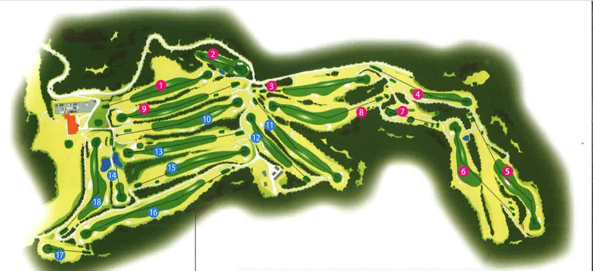
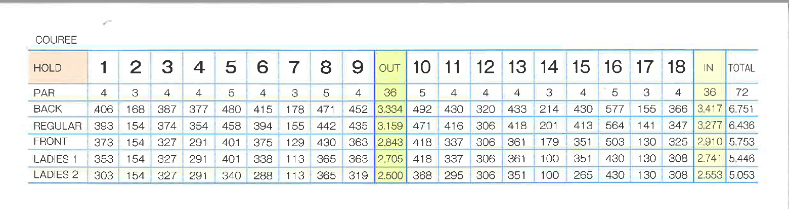

サービスのご案内
コースガイド
恵まれた自然に包まれた100万坪の中に、素晴らしい眺望が人気の雄大なチャンピオンコース(18H)を展界し、ベテランから初心者まで、幅広い層のゴルフファンに親しまれております。
 ▶︎コースの詳細を見る
撮影のご利用
函館KGカントリークラブでは撮影でのご利用も可能です。
ロケハンのご予約も承っております。
予約はこちらから
わからないことがありましたら、お問い合わせページまでお気軽にお申し付けください。
▶︎お問い合わせはこちらからその他
函館KGカントリークラブでは、他のゴルフ場では取り扱わないようなサービスを率先して取り入れて参ります。
キャンプ
バーベキュー
スキー
上記以外のリクエストも随時受け付けております。詳しくはお問い合わせページまでお申し付けください。
▶︎お問い合わせはこちらから